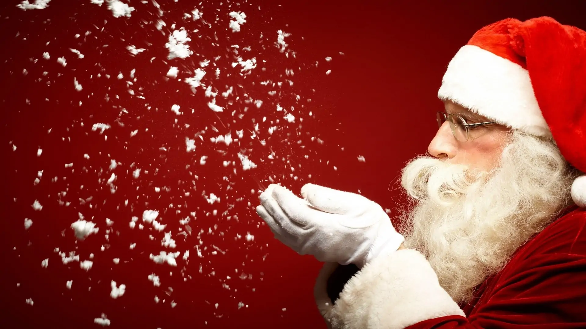

A kereszténység előtt számos ősi kultúra ünnepelte a téli napfordulót,
amely az év legrövidebb napja, és általában december 21–22 körül esik.
Az emberek ilyenkor a fény visszatérését, a sötétség végét és az új év
kezdetét ünnepelték.
Az ókori rómaiak a Saturnalia nevű fesztivált tartották decemberben,
amely Saturnus, a mezőgazdaság istenének tiszteletére zajlott. Ez
egy vidám ünnep volt ajándékozással, lakomázással és mulatsággal.
A skandináv népek a Yule-t ünnepelték, amikor hatalmas tüzeket
gyújtottak a Nap istenének tiszteletére, és a családok együtt
gyűltek össze a melegedés és az ünneplés jegyében.
A keresztény karácsony eredete
A kereszténység korai időszakában Jézus születésének pontos dátuma
ismeretlen volt. Az i.sz. 4. században az egyház hivatalosan december
25-ét jelölte ki Jézus születésének ünneplésére.
Ez részben azért történt, hogy keresztény tartalmat adjanak a már
meglévő pogány ünnepeknek, és megkönnyítsék a pogányok áttérését a
kereszténységre.
A karácsony a görög "Khristos" (Krisztus) és a latin "missa" (mise)
szavakból származik, utalva a Krisztus születésének ünneplésére
tartott istentiszteletre.
A karácsony hagyományainak fejlődése
Középkor
A középkorban a karácsony Európában vallási és világi ünnepként egyaránt
megjelent.
A templomokban tartott szertartások mellett színdarabokat, lakomákat
és karneváli hangulatú ünnepléseket rendeztek.
Az ajándékozás szokása kialakult, részben a Szent Miklós
legendájához kapcsolódva, aki jótékonykodásáról volt híres.

Modern karácsony
A 19. században a karácsony kezdte elnyerni mai formáját, különösen a
viktoriánus korszak alatt:
Karácsonyfa: A német hagyományok alapján elterjedt a karácsonyfa
állítása, amelyet díszekkel és gyertyákkal ékesítettek.
Ajándékozás: Az ipari forradalom alatt megjelentek a tömegtermelt
ajándékok, amelyek a gyermekek körében különösen népszerűek lettek.
Santa Claus: A holland Szent Miklós-hagyományokból és a reklámokból
alakult ki a Mikulás, aki a modern karácsony ikonikus alakja lett.
Karácsony világszerte
Manapság a karácsony sokféleképpen ünneplik a világ különböző részein. Bár
vallási gyökerei a kereszténységhez köthetők, a karácsony világi formája
ajándékozással, családi összejövetelekkel, dekorációval és ünnepi
ételekkel világszerte népszerű. A karácsony tehát nemcsak vallási ünnep,
hanem a szeretet, az együttlét és a remény ünnepe is, amely generációk óta
összeköti az embereket.